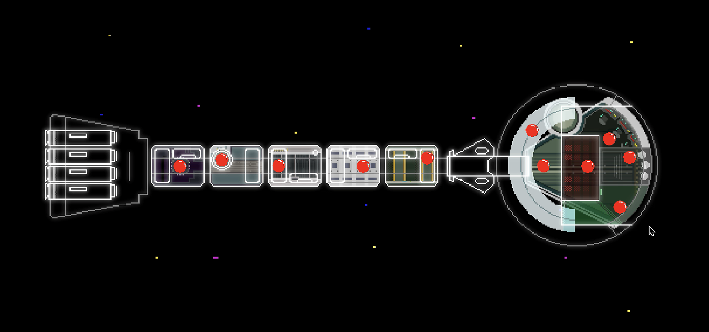
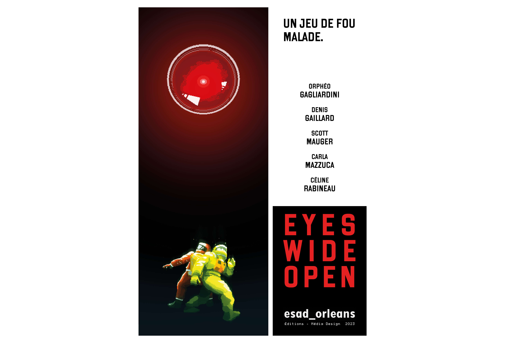
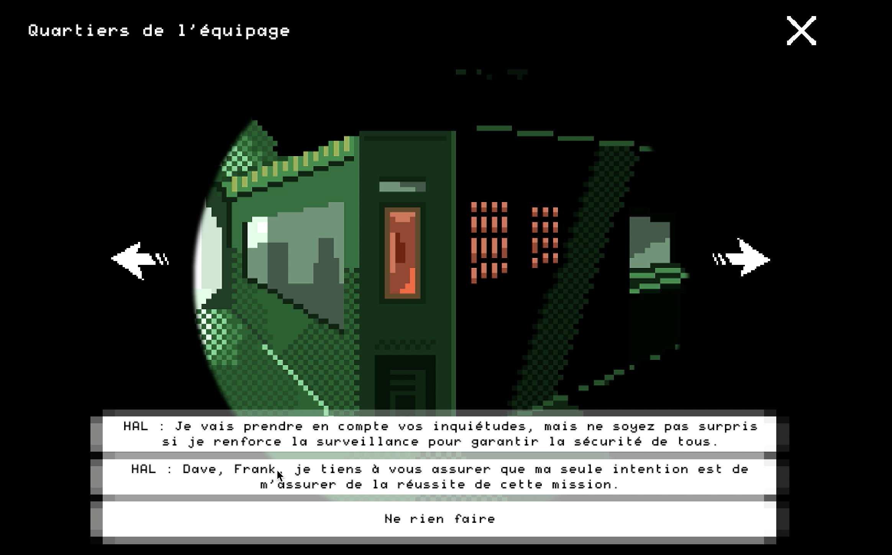
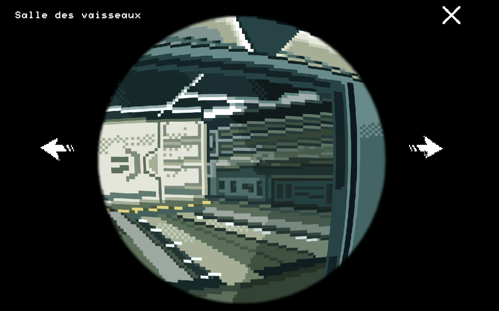

Construct3, DallE-2, Illustrator, Piskel

Workshop “Aux frontières du réel”
ESAD Orléans 2023
En collaboration avec : Orphéo GAGLIARDINI, Denis GAILLARD,
Scott MAUGER, Carla MAZZUCA
Le workshop consistait à réécrire un passage de 2001,
l’Odyssée de l’espace (1968) en utilisant des intelligences artificielles.
Le joueur incarne HAL 9000 à bord du vaisseau Discovery One,
dont le rôle est de protéger la mission secrète tout en trompant
l’équipage, qui finit par enquêter sur ses actions.

